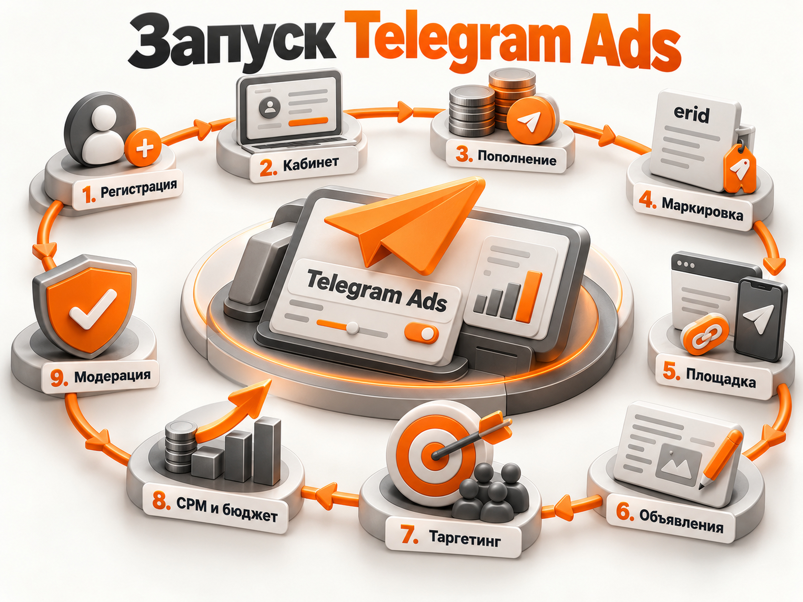

Блог о платном трафике
Как запустить Telegram Ads в России в 2026 году
Чтобы запустить рекламу в Telegram Ads на российскую аудиторию, сначала выберите тип рекламного кабинета, затем откройте аккаунт, пополните баланс, подготовьте площадку, настройте объявления и таргетинг, пройдите модерацию. Для бизнеса с оплатой от российского ИП или юридического лица обычно удобнее евро-кабинет через реселлера: он позволяет платить в рублях, получать документы и организовать маркировку рекламы.
В октябре 2026 года стандартный первый взнос для рекламы на Россию у eLama составляет 250 € именно на рекламный баланс. С учётом комиссии 20% и НДС 22% пример платежа составит 366 €. Для отдельных тематик условия другие. Перед оплатой важно проверить не только цену входа, но и доступную географию, типы таргетинга и юридические ограничения.
Какие есть способы запуска Telegram Ads
У Telegram Ads несколько способов оплаты и доступа к рекламной системе. Выбирать нужно не по минимальному взносу, а по тому, какую аудиторию и какой объект вы хотите рекламировать.
| Вариант | Как оплачивается | Кому подходит | Что учитывать |
|---|---|---|---|
| Евро-кабинет | Через реселлера, обычно в рублях; баланс в евро | Российскому бизнесу, которому нужны геотаргетинг, аудитории, документы и сопровождение | Комиссия, НДС, условия для тематики и страны |
| Gram-кабинет (ранее TON) | Криптовалютой Gram через инфраструктуру Telegram | Самостоятельным рекламодателям с подходящей географией и ограниченным набором настроек | Нет полного набора возможностей евро-кабинета |
| Stars-кабинет | Заработанными Telegram Stars | Владельцам каналов и ботов, продвигающим собственный проект | Stars нельзя свободно переносить между разными клиентскими проектами |
Название TON по-прежнему встречается в старых инструкциях и иллюстрациях. В актуальной терминологии криптовалютный рекламный кабинет называется Gram; инфраструктура TON при этом остаётся связанной с платежами.
Для рекламодателя из России, которому нужны документы и системная закупка рекламы, первый вариант обычно наиболее практичен. Gram и Stars решают другие задачи и не являются просто более дешёвой копией евро-кабинета.
Сколько стоит запустить Telegram Ads в 2026 году
Минимальный бюджет зависит от типа аккаунта, страны, тематики и условий посредника. Нельзя сравнивать только сумму, которая попадёт на баланс: рекламодатель оплачивает и сопутствующие расходы.
Например, по действующим справочным условиям eLama для стандартного евро-кабинета с таргетингом на Россию минимальное первое пополнение составляет 250 €, повторное - от 50 €. Для образования и криптовалют первое пополнение составляет от 500 €, причём отличается и комиссия. У отдельных специальных типов аккаунтов и акционных предложений условия могут быть другими.
Пример первого платежа: 366 €
Это расчёт для обычной тематики при комиссии посредника 20%:
| Статья расходов | Сумма |
|---|---|
| Рекламный баланс | 250 € |
| Комиссия 20% от рекламного пополнения | 50 € |
| НДС 22% от суммы 300 € | 66 € |
| Всего к оплате | 366 € |
На показ рекламы расходуются 250 €, а не все 366 €. Комиссия и НДС не превращаются в рекламные показы. В рублях платёж зависит от применяемого сервисом курса и даты выставления счёта.
Для рекламы образовательных услуг у eLama указаны первый взнос 500 € и комиссия 28%; для криптовалют - 500 € и 33% соответственно. При выборе посредника нужно заново проверить его актуальные тарифы и возможность запуска именно вашей тематики. Некоторые сервисы предлагают акции на первый платёж или постоплату, но это отдельные условия, а не общий минимум платформы.
Через какой сервис открыть рекламный кабинет
Для работы из России обычно рассматривают eLama, OneSpot, telescope и Vitamin.tools. Сервисы помогают открыть аккаунт, пополнить баланс и работать с документами. Но условия нельзя считать одинаковыми: отличаются комиссии, доступные варианты кабинетов, поддержка и набор инструментов.
При выборе я бы сравнивал пять вещей: стоимость первого и повторного пополнения; поддержку нужной тематики и страны; доступные таргетинги; порядок маркировки и получения erid; документы и доступы к кабинету. Отдельно уточните, на чьё юридическое лицо открывается аккаунт и что происходит с остатком бюджета при прекращении работы.
Если один посредник обещает минимальную комиссию, но не поддерживает нужную рекламную задачу, экономия не имеет смысла.
Как запустить Telegram Ads через посредника: 9 шагов
Последовательность запуска простая, но некоторые решения нужно принять до пополнения. Особенно важно заранее определить конечную цель и способ её измерения: подписки на канал, обращения в бот, заявки с сайта или продажи.

1. Зарегистрироваться у посредника
Создайте аккаунт в выбранном сервисе и заполните сведения о рекламодателе. Для ИП или юридического лица это данные, необходимые для договора, счетов и маркировки. Не смешивайте в одном рекламном аккаунте проекты разных компаний, если правила сервиса требуют один бизнес на аккаунт.
2. Создать подходящий Telegram Ads кабинет
Выберите страну показов и тип кабинета до оплаты. Например, у eLama рекламные аккаунты создаются под определённую страну, а не под произвольный набор государств сразу. Если нужны дополнительные операторские аудитории или особые возможности, проверьте, предоставляются ли они в выбранном варианте.
3. Пополнить баланс
Проверьте счёт, размер комиссии, НДС и сумму, которая отобразится на рекламном балансе. Разделяйте первоначальный обязательный взнос и рабочий бюджет теста: это не одно и то же. Сохраняйте платёжные документы.
4. Подготовить маркировку рекламы
Для рекламы, подпадающей под российские требования, нужны корректные данные рекламодателя, идентификатор erid и передача предусмотренной информации через ОРД. Часть действий посредник может автоматизировать, но ответственность за достоверность сведений и соблюдение требований не исчезает. Не включайте объявления, пока не понятен порядок маркировки и отчётности.
5. Подготовить точку перехода
Реклама может вести в Telegram-канал, бот, на отдельную публикацию, мини-приложение или сайт, если соответствующая ссылка поддерживается вашим типом объявления и таргетинга.
У канала должны быть понятная тема, описание, полезные последние публикации и логичный следующий шаг. В боте проверьте команду запуска, сценарий, работу кнопок и передачу заявок. На сайте убедитесь, что открывается нужная страница, формы работают, а обращения фиксируются аналитикой. В некоторых форматах и типах таргетинга внешние ссылки запрещены: это нужно проверить до сборки объявления.
6. Сделать несколько рекламных объявлений
В классическом тексте Telegram Ads используется ограничение до 160 символов. В соответствующих евро-кабинетах бывают доступны медиаформаты. Хорошее объявление должно за несколько секунд объяснить, что предлагается, кому это подходит и зачем переходить.
Например, для онлайн-курса можно отдельно проверить текст с конкретной пользой обучения и текст с приглашением на бесплатный вводный материал. Это две разные рекламные гипотезы. Не обещайте результаты, которые не сможете подтвердить, и заранее проверьте требования модерации для своей тематики.
7. Настроить таргетинг
В актуальном евро-кабинете применяются четыре основные группы выбора показов. Они отличаются не только настройкой, но и тем, в каком контексте пользователь увидит рекламу.
| Тип | Как работает | Когда тестировать |
|---|---|---|
| Пользователи | Подбор аудитории по доступным географическим, языковым, тематическим и другим признакам | Когда важнее свойства аудитории, чем один конкретный канал |
| Каналы | Показ в выбранных каналах или тематических группах каналов | Когда известны сообщества, близкие к целевому спросу |
| Боты | Размещение в подходящих Telegram-ботах | Когда пользователи решают смежную задачу внутри бота |
| Поиск | Реклама по поддерживаемым поисковым запросам внутри Telegram | Когда человек уже ищет тематику, канал или сервис |
Для первого теста не стоит объединять несвязанные аудитории. Например, при продвижении сервиса для предпринимателей можно отдельно сравнить бизнес-каналы, профессиональные сообщества и релевантные поисковые запросы. У каждой группы должен быть собственный показатель результата, иначе невозможно понять, что работает.
8. Установить CPM и ограничение расходов
Telegram Ads использует модель CPM: оплата за тысячу рекламных показов. Вы выбираете ставку и бюджет, затем контролируете фактические показы и расход. Если показов нет, проверьте не только ставку, но и слишком узкий таргетинг, исключения, статус модерации и доступный остаток средств.
Не начинайте с максимального CPM, если пока неизвестно, сколько подписок или заявок приносит трафик. Бюджет имеет смысл распределить между несколькими проверяемыми гипотезами, а не потратить целиком на одно объявление.
9. Отправить рекламу на модерацию
Проверьте текст, посадочную площадку, условия тематики и корректность ссылок. Если объявление отклонили, исправьте указанную причину, а не создавайте подряд его копии. После одобрения убедитесь, что начались показы, переходы корректно размечаются и конечное действие измеряется.
Что выбрать: евро-кабинет, Gram или Stars
Евро-кабинет подходит, когда реклама запускается на российскую аудиторию для бизнеса, нужна оплата по документам, более широкий выбор настроек и регулярное управление кампаниями. Комиссия здесь является платой за удобную инфраструктуру, поэтому сравнивать её нужно с общей стоимостью привлечения клиента.
Самостоятельный криптовалютный кабинет, ранее известный как TON, сейчас обозначается Gram. Он интересен для отдельных запусков с подходящими форматами таргетинга, но не заменяет евро-кабинет с его возможностями выбора аудитории и географии. Низкий порог входа сам по себе не означает пригодность для рекламы на Россию.
Stars-кабинет нужен прежде всего авторам каналов и разработчикам ботов, которые хотят направлять заработанные Stars на рекламу того же проекта. По правилам Telegram, Stars могут становиться доступными для рекламных расходов с задержкой до 21 дня. Использовать Stars одного канала как универсальный баланс для нескольких чужих рекламных кампаний нельзя.
Как оценивать эффективность Telegram Ads
CTR и дешёвые клики ничего не говорят о продажах без анализа дальнейших действий. Сначала определите конечный результат: подписчик, запуск бота, квалифицированная заявка, оплата или повторная покупка. Затем настройте учёт каждого доступного шага.
Для сайта подходят UTM-метки и веб-аналитика, для Telegram-канала - отдельные пригласительные ссылки и учёт вступивших, для бота - события запуска, регистрации, заявки и оплаты. Если есть CRM, полезно сопоставлять источник рекламы с квалифицированными лидами и продажами.
Пример расчёта без привязки к рыночным средним
Допустим, рекламная кампания получила 100 000 показов при CPM 2 €. Это условная модель, а не прогноз реальной стоимости рекламы:
| Показатель | Расчёт | Результат |
|---|---|---|
| Рекламные расходы | 100 000 / 1000 × 2 € | 200 € |
| Клики при CTR 0,5% | 100 000 × 0,5% | 500 |
| Стоимость клика (CPC) | 200 € / 500 | 0,40 € |
| Подписчики при конверсии 10% от кликов | 500 × 10% | 50 |
| Цена подписчика | 200 € / 50 | 4 € |
| Заявки при конверсии 10% от подписчиков | 50 × 10% | 5 |
| Стоимость заявки (CPL) | 200 € / 5 | 40 € |
| Продажи при конверсии 20% от заявок | 5 × 20% | 1 |
| Стоимость продажи по расходу на показы | 200 € / 1 | 200 € |
Изменение конверсии на любом этапе заметно меняет цену конечного результата. Это причина считать всю воронку, а не ориентироваться на один CTR. В примере стоимость продажи рассчитана только по затратам рекламного кабинета: комиссию, НДС и другие расходы нужно учитывать отдельно, если оцениваете полную экономику проекта.
Практический совет: заранее задайте допустимую стоимость клиента. Если продажа при существующей маржинальности не окупает рекламу, увеличение показов проблему не решит. Сначала ищите слабое место: нецелевая аудитория, слишком общий текст, плохая посадочная площадка или низкая конверсия из заявки в оплату.
На что обратить внимание при первых тестах
Частые проблемы при запуске выглядят похоже, но требуют разных решений:
- Нет показов. Проверьте CPM, модерацию, баланс, ограничения таргетинга и исключённые площадки.
- Есть показы, но мало кликов. Перепроверьте соответствие объявления аудитории, понятность предложения и креатив.
- Есть клики, но нет подписок или заявок. Проверьте точку перехода, загрузку страницы, работу бота и реальную пользу предложения.
- Заявки есть, но продаж нет. Оцените качество обращений, работу менеджеров и экономику, прежде чем увеличивать бюджет.
- Кампании невозможно сравнить. Разделите аудитории и используйте отдельные ссылки или события аналитики.
Это не универсальные нормы CTR или CPL: значения зависят от темы, региона, аудитории, креатива и выбранного действия.
Что с рекламой в Telegram в России в 2026 году
На октябрь 2026 года важно учитывать не только техническую доступность Telegram Ads, но и правовую ситуацию. 25 марта 2026 года ФАС России разъяснила, что в отношении распространения рекламы в Telegram и YouTube необходим переходный период до конца 2026 года, в течение которого меры ответственности за такое размещение применяться не будут.
Это разъяснение не означает, что любой запуск автоматически признан законным. Ведомство отдельно указывало, что учитывает дату договора, публикации, введения ограничений и обстоятельства размещения. Общие требования к содержанию и маркировке рекламы также нужно соблюдать. Для длительной кампании и особенно для запуска после 2026 года требуется дополнительно проверить актуальную правовую позицию.
Когда имеет смысл привлекать специалиста
Создание кабинета и первые показы не гарантируют полезный результат. Основная работа включает подбор аудиторий, тестирование объявлений, проверку посадочной площадки и аналитику продаж.
На сайте есть собственные примеры работы с Telegram Ads: продвижение медицинского центра, привлечение менеджеров маркетплейсов и продвижение йоги и цигун. Это разные воронки и аудитории, поэтому результаты конкретного кейса нельзя автоматически переносить на другой бизнес.
Если вы планируете платное продвижение, начните с двух решений: выберите подходящий рекламный кабинет и определите конечную метрику, ради которой будете покупать показы. После этого проще оценить необходимый бюджет, сравнить гипотезы и понять, окупается ли Telegram Ads в вашей задаче.